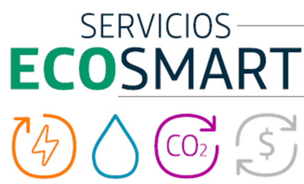
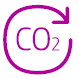

Smart Water permite la gestión del consumo de agua en remoto evitando desplazamientos y evitando fugas o averias. Al evitar los desplazamientos para lectura,

| Categorías ambientales | Resolución | Código de verificación | Fecha | |
|---|---|---|---|---|
| Servicios que fomentan el ahorro energético | ||||
| Optimiza el proceso productivo del cliente y reduce el consumo de energia | SI | aeca2654b...677e762 | 20/4/2020 12:46:06 | |
| Reduce el consumo energético mediante el control y gestión de la energía en instalaciones | SI | 7460b892f...35befed | 20/4/2020 12:56:21 | |
| Optimiza las rutas logísticas o la flota y reduce el consumo de combustibles | SI | c2d32b703...b2d6ce0 | 20/4/2020 13:06:53 | |
| Derivado del uso del servicio se reducen desplazamientos del cliente o su personal | SI | c2d32b703...b2d6ce0 | 20/4/2020 13:06:53 | |
| La utilización del servicio se realiza con equipos más eficientes | NO | c2d32b703...b2d6ce0 | 20/4/2020 13:06:53 | |
| Servicios que fomentan el consumo responsable del agua | ||||
| El servicio incluye control/gestión más eficiente del agua | SI | aeca2654b...677e762 | 20/4/2020 12:46:06 | |
| El servicio permite detectar fugas | SI | 7460b892f...35befed | 20/4/2020 12:56:21 | |
| El servicio mejora la calidad del agua | NO | c2d32b703...b2d6ce0 | 20/4/2020 13:06:53 | |
| Servicios que fomentan el ahorro de emisiones de CO2 | ||||
|  | El servicio genera un ahorro de energía (electricidad, gas natural o combustibles) y sus emisiones asociadas | SI | aeca2654b...677e762 | 20/4/2020 12:46:06 |
| Mejora el mantenimiento de equipos de climatización y por tanto evita la fuga de gases refrigerates | NO | 7460b892f...35befed | 20/4/2020 12:56:21 | |
| Mejora la planificación del tráfico, trasporte público y/o reduce el tráfico en ciudades | NO | c2d32b703...b2d6ce0 | 20/4/2020 13:06:53 | |
| Servicios que fomentan la economía circular | ||||
| El servicio incluye mantenimiento de equipos físicos/HW y prolonga su vida útil | NO | aeca2654b...677e762 | 20/4/2020 12:46:06 | |
| Monitorización remota de equipos y bienes que minimizan mantenimiento | NO | 7460b892f...35befed | 20/4/2020 12:56:21 | |
| Incluye recogida y recilaje o restauración de dispositivos | NO | c2d32b703...b2d6ce0 | 20/4/2020 13:06:53 | |
Puedes verificar el detalle de las resoluciones con respecto a cada categoría utilizando este código de verificación directamente en la plataforma TrustOS: [HASH_CODE]